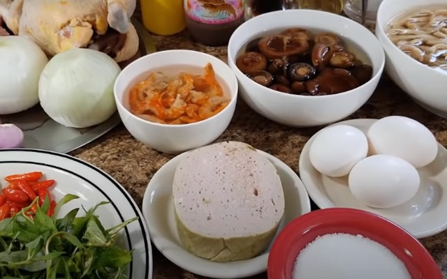
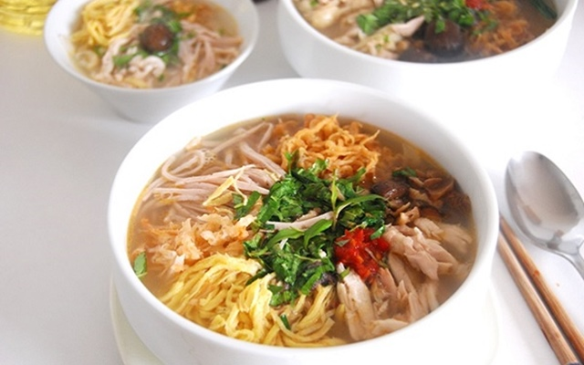

Bún Thang
Bún thang là một món ngon mang đậm phong vị của người Hà Nội, nổi tiếng với sự cầu kỳ nhưng lại vô cùng thanh đạm. Cách nấu bún thang ngon đúng vị Hà Nội xưa cũng rất đơn giản, dễ làm tại nhà.Bún được rất nhiều người yêu thích với nước dùng ngọt đậm đà nhưng vẫn thanh, trong veo và đặc biệt để tạo nên một bát bún thang ngon thì cần đến 20 nguyên liệu với nhiều màu sắc khác nhau. Chính vì thế mà nhiều người nghĩ rằng nấu bún thang rất khó và đòi hỏi nhiều công sức.Nhưng trên thực tế, chỉ cần chú ý một chút là có thể làm bún thang ngon tại nhà mà vẫn đậm đà như ngoài hàng.

Nguyên Liệu
- Bún tươi: 2kg
- Giò lụa: 250g
- Xương ống heo: 1kg
- Gà ta: 1,6kg
- Tôm nõn khô: 50g
- 7 củ hành tím, 3 củ hành tây, hành lá, rau răm, gừng.
- Gia vị: Mắm tôm, nước mắm, dầu ăn, hạt nêm, muối, đường, dấm.
- Củ cải khô: 50g
- Củ cải khô: 50g
- Nấm hương: 20g
Công Thức Nấu
- Sơ chế rau, củ
- Ngâm và làm sạch đồ khô
- Ninh xương
- Luộc gà và xé sợi
- Xào tôm, rán trứng
- Hoàn thành tô bún thang.(Giò lụa thái thành từng lát tròn rồi thái tiếp thành từng sợi nhỏ để bát riêng.Chần bún với nước sôi và chia vào các bát. Xếp thịt gà, giò lụa thái nhỏ, trứng rán thái nhỏ, ruốc tôm nõn, rắc hành lá và rau răm thái nhỏ lên trên. thêm vài lát ớt tươi, chút mắm tôm (nếu không ăn được thì không cho) rồi chan nước dùng vào thưởng thức. Ăn kèm với củ cải ướp muối chua ban đầu ăn rất giòn ngon hấp dẫn.)
